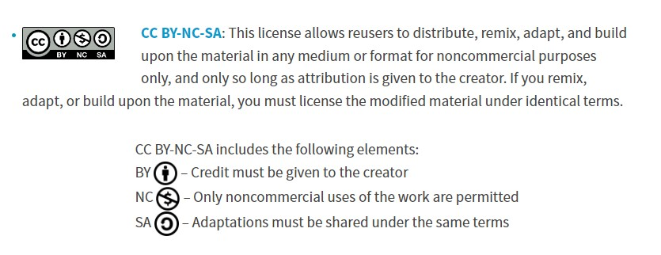

/invention_&_intellectual_property
(31_may_2022)
The last session of FabAcademy discussed the topic of invention, intellectual property and income.
However, during the class, we didn't see any kind of registration for projects or products nor any
FabAcademy example that elaborated on this topic.
We focused the session on creating our own plan for the project of SmartCitizen, taking into account
all the aspects that are relevant to this project like fabrication, data management, open source
mindset, etc. Victor and Oscar explained the state of the situation nowadays and then we created a
plan for the project to survive, considering incomes, intellectual property and user experience. I
teamed up with Audrey, Gerda, Tatiana and Adai and this was our proposal:
.dissemination_plan
As commented on the previous task, it's a bit complex to define some of the questions asked around hypothetical futures since our projects are quite experimental and open now and they also gather many different elements. In any case, I'm an open source enthusiast so I would build my dissemination plan around this concept.
SYNE is a project that gathers tools to experiment, play, empathise and feel by using our senses. Each tool has a different function: some are more practical, some others more artistic, some of them are oriented to kids, some others to adults. Regardless, what all these tools have in common is that they are replicable so that anyone who needs them could do them with all the documentation needed.
Taking into account these tools are made for social purposes, I would only make sense if they are open source and anyone who had the materials could fabricate them and use them. However, I believe the creator or creators of the tools (in this case, me and my classmates) must receive recognition and credit for it. For this project, I would use a Creative Commons license that would allow to replicate and modify the tools but only for non-commercial purposes, otherwise the project would lose its sense.

On the other hand, considering this is a non-profit project, I would try to open the website in case anyone would like to participate in this initiative, and collect as many tools as possible that could help to this purpose. To keep the website running, we could use a system of donations after each download of the fabrication documentation.